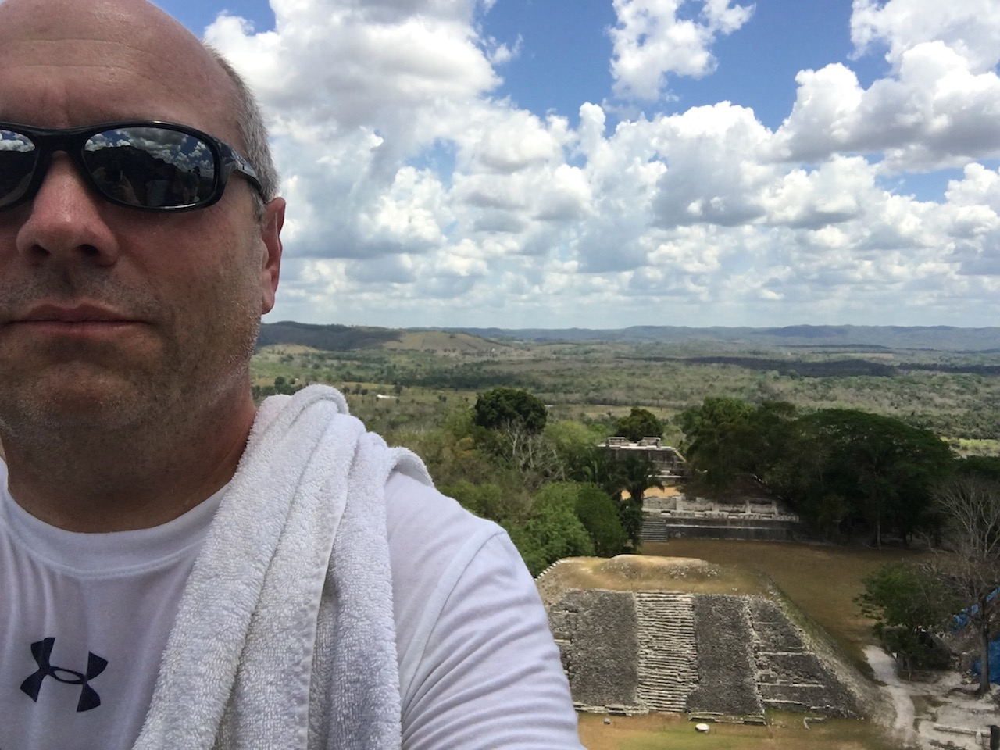

About Me
It's enough. This is still the best way. You go after him with a gun, you'll never get out of it alive. But with this... you slip it into his food or drink, there shouldn't be any taste or smell... thirty-six hours later... poof. A man his age, working as hard as he does... no one will be surprised. Mike can have his suspicions, but that's all they'll be. Please, one homicidal maniac at a time.
Look, I'll give you Jesse Pinkman, OK? Like you said, he's the problem, he's always been the problem and without him, we would... and he's in town, alright? He's not in Virginia or wherever the hell you're looking for him. He's right here in Albuquerque and I can take you to him, I'll take you right to him. What do you say?
Breaking Bad was one of the best TV shows in history. Breaking Bad
Connect with Me